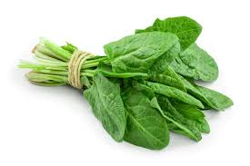

Watercress is a cruciferous plant that grows in water. It is high in protein per calorie. Watercress has the following protein contentTrusted Source: One cup (34 grams [g]) of watercress contains 0.8 g of protein. A 100-g serving of watercress contains 2.3 g of protein and 11 calories. Protein accounts for 84% of its calories. One cup of watercress contains 85 micrograms (mcg)Trusted Source of vitamin K, which is 71% of the daily recommended intake for adults. This is an important vitamin for blood and bone health. Watercress is a rich source of vitamin C, a powerful antioxidant, and it also contains B vitamins, calcium, potassium, and vitamin A. Moreover, watercress provides antioxidant protection and contains phenolic compounds that may helpTrusted Source prevent cancer. How to eat watercress Avoid boiling watercress in water, as this will decreaseTrusted Source its antioxidant content. Instead, eat raw watercress in salads, stuff it into sandwiches, or blend it into smoothies.
Alfalfa sprouts are very low in calories but rich in nutrients. Alfalfa sprouts have the following protein contentTrusted Source: One cup (33 g) of alfalfa sprouts contains 1.3 g of protein. A 100-g serving of alfalfa sprouts contains 4 g of protein and 23 calories. Protein accounts for 69% of their calories. This vegetable is a rich source of vitamin K and a decent source of folate, iron, magnesium, phosphorus, zinc, copper, and vitamin C. Animal studies have suggested that alfalfa sprouts can reduce cholesterol levels. This may be due to their high saponin content. Saponins are a group of compounds that can lower cholesterol. Research also suggests that alfalfa sprouts may decrease inflammation, reduce symptoms of menopauseTrusted Source, and — as a result of their high vitamin K content — help prevent osteoporosis. How to eat alfalfa sprouts Enjoy alfalfa sprouts raw in a sandwich or salad or cooked lightly in a stir-fry or soup.
Spinach is one of the most nutrient-dense leafy green vegetables a person can eat. Spinach has the following protein contentTrusted Source: One cup (25 g) of raw spinach contains 0.7 g of protein. A 100-g serving of spinach contains 2.9 g of protein and 23 calories. Protein accounts for 50% of its calories. The protein in spinach contains all essential amino acids. One cup of spinach contains 121 mcg of vitamin KTrusted Source, which is just over 100% of a person’s daily needs. Spinach is also a rich source of folate, vitamin A, and vitamin C; a good source of magnesium and potassium; and a decent source of calcium. Spinach contains plant compounds that can increaseTrusted Source antioxidant defense and reduce inflammation. In one small studyTrusted Source, 10 athletes who took spinach supplements for 14 days showed reduced oxidative stress and reduced muscle damage after running a half-marathon, compared with those who took a placebo. Research has also linked eating spinach with a lower risk of some cancers, including breast cancer. How to eat spinach Try adding raw spinach to salads or smoothies. A person can also blend it into soups, add whole spinach leaves to curries and stews, or saute it as a side dish. Learn how to make a vegan spanakopita here.